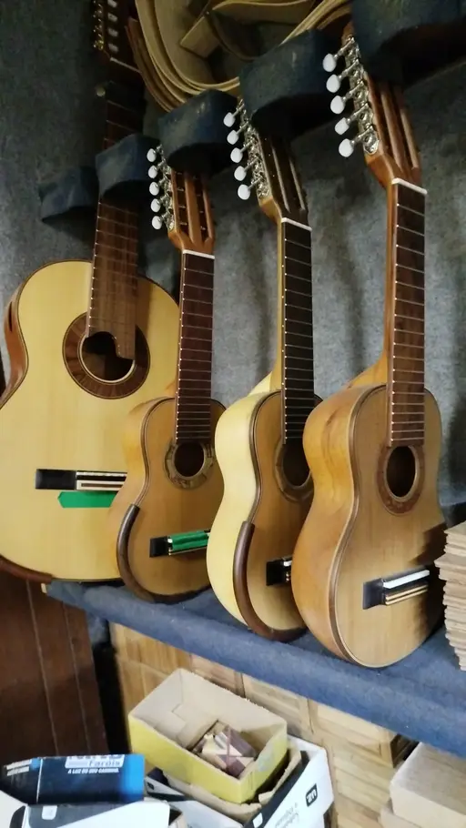

Tradição e Inovação na Construção de Instrumentos
Tradição e Inovação na Construção de Instrumentos
A Baratieri Luthieria, fundada por Jacir Paulo Baratieri, nasceu da paixão por instrumentos artesanais de cordas e pela tradição da música de cordas.
Cada instrumento carrega história, técnica e alma — construído com dedicação, respeito à madeira e sensibilidade musical.
O Método Baratieri é fruto dessa mesma filosofia: compartilhar conhecimento, valorizar a arte da luthieria e tornar o processo acessível para quem deseja aprender, criar e se conectar com a música de forma profunda.


Jacir Paulo Baratieri, hoje com 59 anos, carrega desde a infância uma paixão profunda pela música e pelos instrumentos de cordas. Aprendeu violão e viola ainda menino e tocou em inúmeros bailes da vida, sempre acompanhado da primeira viola — uma Del Vecchio — que restaurou e guarda até hoje como símbolo de sua trajetória.
Ao longo da vida, percorreu diferentes caminhos: caminhoneiro, contador, professor, bancário. Mas a arte com a madeira nunca deixou de caminhar ao seu lado. Nos últimos anos, mergulhou de vez na luthieria, estudando, fazendo cursos, aprendendo com grandes mestres e construindo seus próprios instrumentos artesanais de cordas.
Hoje, em sua oficina organizada, nascem os “filhotes sonoros” da Baratieri Luthieria. A trajetória pode ser recente, mas o sonho vem de décadas. É esse sonho que mantém Jacir jovem, ambicioso e carismático, transformando-o em artista sempre que entra na oficina.
Pare de se perder na construção de instrumentos de cordas. Tenha um método claro do início ao fim.
O Método Baratieri é um app interativo que organiza, guia e acompanha toda a construção — com etapas, medidas, checklists e registro completo do projeto.
Ele não substitui sua experiência. Ele a potencializa. Organiza teoria e prática no ponto exato onde você precisa, evitando dúvidas, travas e passos perdidos.
✔ Checklists técnicos interativos
✔ Teoria prática explicada dentro de cada subetapa
✔ Medidas e tolerâncias configuráveis
✔ Figuras e desenhos técnicos
✔ Galeria para imagens do projeto
✔ Exportação em PDF e acompanhamento do progresso
🔗 Quer divulgar o Método Baratieri e ganhar comissões? Seja um parceiro.

Na Baratieri Luthieria, cada instrumento é construído artesanalmente, um a um, seguindo a tradição da luteria clássica. Não existem peças idênticas — cada obra carrega identidade própria, história e propósito musical.
Além da vitrine de instrumentos, oferecemos serviços especializados de manutenção, ajuste e restauração de instrumentos de cordas, sempre com atenção aos detalhes e respeito às características originais.
Visite a Loja